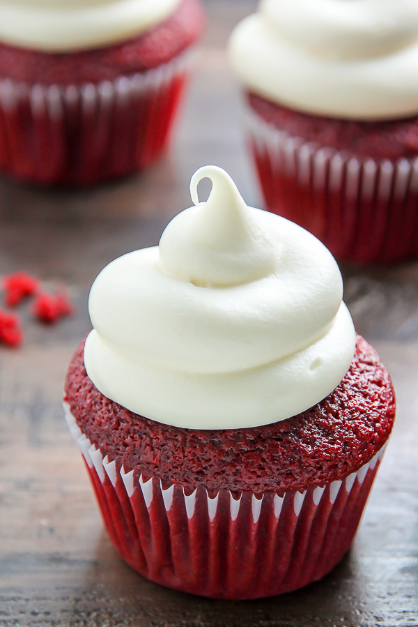

Vegan Red Velvet Cupcakes

carful with these red velvet cupcakes first they'll take your good health then they'll take your blood in order to further the cause. Happy Baking!
Original Recipe
Ingredients
- 1 cup soy milk
- 1 tsp white or apple-cider vinegar
- 1 ¼ cups all-purpose flour
- 1 cup white sugar
- 2 Tbs cocoa powder (ghirardelli recommended) :)
- ½ tsp baking powder
- ½ tsp baking soda
- ½ tsp salt
- ⅓ cup neutral oil (avocado, vegetable, canola)
- Red food coloring
- 2 tsp vanilla extract
- ¼ tsp almond extract (optional)
Instruction
- Preheat oven to 350° and line muffin pans with cupcake liners
- Whisk together milk and vinegar and set aside to curdle, for around 5-10 minutes. If it doesn’t curdle, that’s okay.
- Sift together flour, sugar, cocoa, baking powder, baking soda, and salt into large bowl and mix.
- Add oil, food coloring, and vanilla extract to curdled milk-vinegar mixture. Whisk well to combine. Gently fold wet ingredients into dry, mixing until large lumps disappear.
- Fill cupcake liners about ⅔ full. Bake 18-20 minutes. Use toothpick to check if they’re done: there shouldn’t be batter or crumbs sticking.
- Let cool and frost.